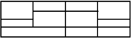

| Пара | Час | Дисципліна | Вид заняття | Викладач | Аудиторія |
|---|---|---|---|---|---|
| 1 | 08:00–09:20 | Комплексний аналіз | Лекція | доцент Самкова Г. Е. | 73 |
| 2 | 09:30–10:50 | Алгебра і теорія чисел | Лекція | Варбанець | 98 |
| 3 | 11:20–12:40 | Алгебра і теорія чисел | Практика | Варбанець | 98 |
| 4 | 12:50–14:10 | Вікно | — | — | — |
| 5 | 14:20–15:40 | Вікно | — | — | — |
| 6 | 15:50–17:10 | Базова загальновійськова підготовка | Лекція | — | Львівська 15 |
| Ім’я | Роки життя | Основні теореми |
|---|---|---|
| Ролль | 1652–1719 | Теорема Ролля |
| Лагранж | 1736–1813 | Теорема про середнє значення, внесок у варіаційне числення |
| Ейлер | 1707–1783 | Формула Ейлера, теореми в аналізі та теорії чисел |
| Ферма | 1607–1665 | Мала теорема Ферма |